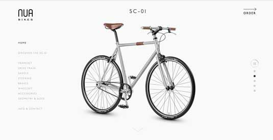
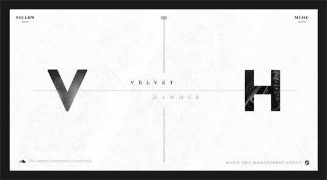

Why minimalist website design style becomes so popular within UX/UI designers?
Here are some common reasons to help you decide whether it is necessary for you to implement the simple, clean and intuitive style of minimalist website design:
*Minimalist websites are usually easy-to-use and offer a better user experience.
*Minimalist webs are simple and responsive.
*Simple, clean and intuitive interfaces serve busy users better.
*Minimalist websites load faster, which can effectively reduce web bounce rate.
*Simple and clean websites enable users to naturally focus on the page contents/services.
https://www.hugeinc.com/

http://www.nuabikes.com/

http://velvethammer.net/